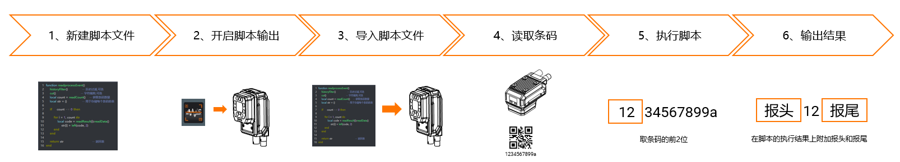
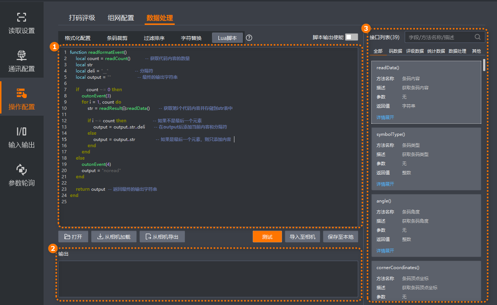
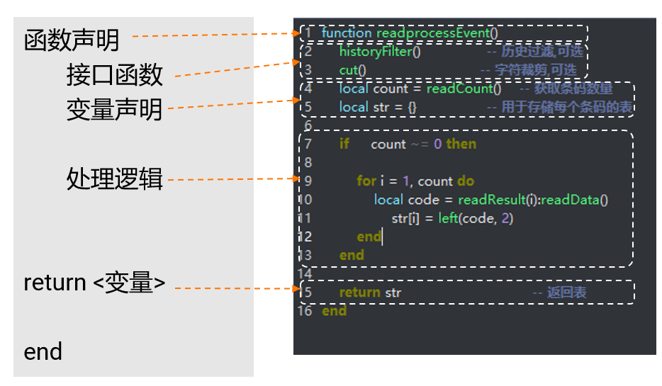

Lua脚本是一种嵌入式脚本语言，具有简洁的语法、高效的执行速度和易于嵌入的特点。IDMVS支持通过Lua脚本自定义配置读码器格式化输出、数据处理、FTP图像名、文件名及文件内容编辑等，实现功能的扩展。
脚本执行流程如下图所示，流程图中的脚本和数据处理逻辑仅用作示例。
V4.0.0及以上版本固件，所有型号的全功能型智能读码器、全功能型(Mini)智能读码器、紧凑型智能读码器、紧凑型(Mini)智能读码器、极小型智能读码器和极小型(Mini)智能读码器均支持Lua脚本。

新建脚本文件
使用IDMVS编辑器或者其他文本编辑器编辑程序。
开启脚本输出
在IDMVS Lua脚本页面，开启脚本输出使能。
导入脚本文件
在IDMVS Lua脚本页面，单击导入至相机将编辑区域脚本保存至当前连接的读码器中。
读取条码
触发读码器读取条码内容。
执行脚本
在脚本程序中调用相机提供接口，获取条码内容等数据，经过脚本程序处理后，再将处理结果返回至相机。
输出结果
相机将脚本程序处理结果进行绑定，输出至终端。
在主界面功能导航栏，选择，进入Lua脚本页面，如下图所示。

Lua脚本页面各模块功能说明如下表所示。
|
序号 |
模块名称 |
功能说明 |
|---|---|---|
|
1 |
脚本编辑区域 |
用于编辑Lua脚本代码。 说明
Lua脚本编辑区域的代码支持实时语法提示功能。 脚本编辑区域上下方的按钮功能说明如下。
|
|
2 |
脚本输出区域 |
通过输出区域可查看脚本运行结果。
|
|
3 |
接口列表 |
可查看Lua脚本支持的接口及相关说明。 说明
部分接口支持示例代码，可单击详情展开进行查看，同时支持单击一键复制示例代码。 |
读码器中运行的Lua脚本需遵循如下组成结构，本节使用一个简单的示例为您分解脚本结构。
一个脚本中可以包含一个或多个不同类型脚本对应的函数。实际使用过程中只是因使用场景和实现需求不同，使用的函数声明和调用的接口函数存在差异。
脚本文件中，在开头加“--”用来表示注释。

Lua脚本根据使用场景，可以分为如下三类。
在实际使用Lua脚本过程中请确保至少包含一类Lua脚本对应的函数名称。
用于替代IDMVS中过滤排序模块配置的数据处理逻辑，在脚本中实现对读取条码数据的裁切、替换等操作。此类Lua脚本对应的函数名称为“function readprocessEvent ()”。
用于替代IDMVS中格式化配置模块配置的输出数据，在脚本中实现对输出数据的组织，例如添加自定义内容、控制IO输出等操作。此类Lua脚本对应的函数名称为“function readformatEvent ()”。
此类脚本不支持配置FTP协议的输出数据。
如需控制IO输出，需将对应管脚的输出事件设置为“脚本控制”。
用于替代IDMVS中格式化配置模块配置的FTP协议格式化配置，例如修改文件名称，添加其他自定义信息等。此类Lua脚本对应的函数名称为“function nameformatEvent()”。
IDMVS提供涵盖码数据、评级数据、统计数据、数据处理等模块的接口函数。通过调用接口函数，可以更加便捷、高效地实现读码器的功能扩展。详情请参见脚本接口。
在脚本中声明后续处理逻辑要使用的变量，更方便存储、管理和复用数据，使程序逻辑清晰、高效且易于维护。
根据实际业务需求编写数据处理逻辑代码。可在接口列表，查看参考部分接口的示例代码。
通过返回值输出处理后的内容。